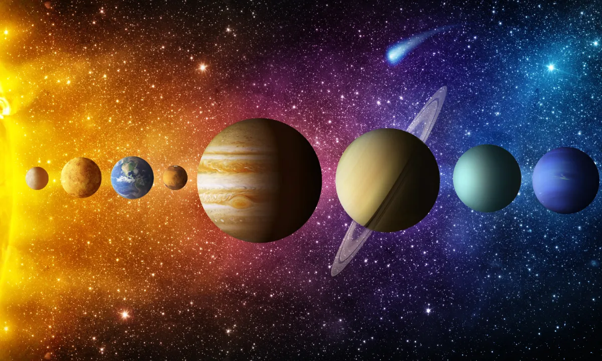
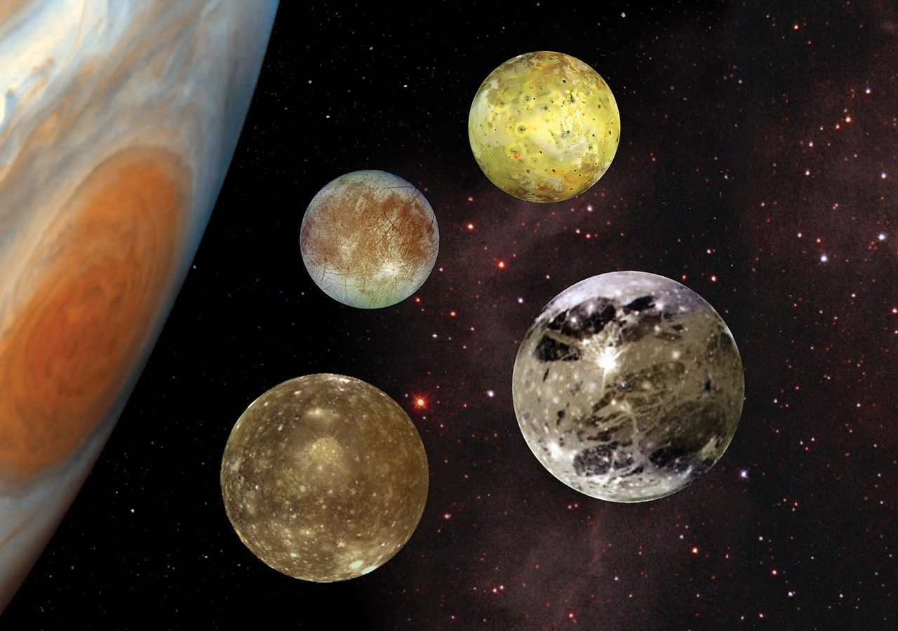
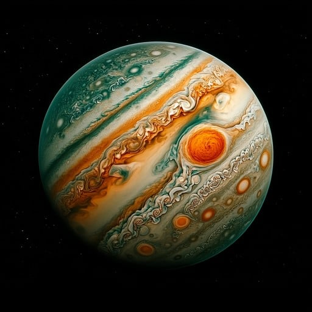
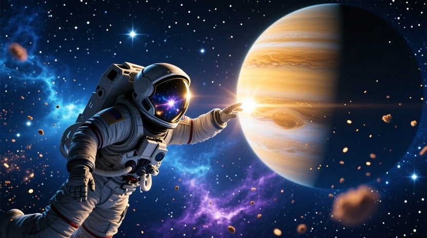
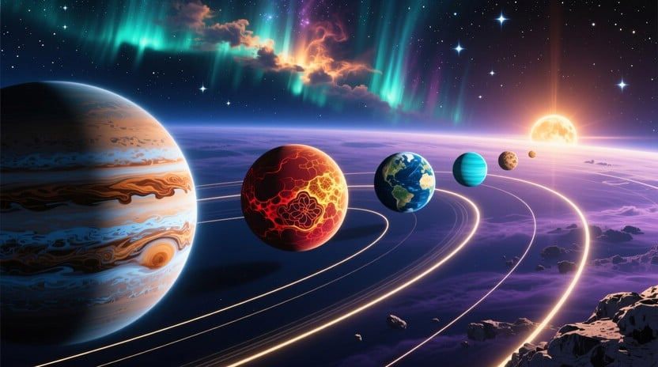

Jupiter is Solar System’s Oldest Planet,
Planetary Researchers Say

Introduction to Jupiter
Jupiter is the fifth planet from the Sun and the largest one in our Solar System. It’s a gas giant made mostly of hydrogen and helium - the same elements that make up the Sun. Jupiter has no solid surface, only thick layers of swirling clouds and gases. Even though it’s huge, it spins very fast - one day on Jupiter lasts only about 10 hours!

Moons of Jupiter
Jupiter has 79 known moons and a thin ring around it. The four largest moons - Io, Europa, Ganymede, and Callisto-are called the Galilean Moons. Europa is covered with ice, and scientists believe there may be liquid water beneath it, raising hopes for life beyond Earth.

The Great Red Spot
The “Great Red Spot” is Jupiter’s most famous feature- a gigantic storm larger than Earth itself! This storm has been raging for more than 300 years.and its reddish color comes from chemicals in Jupiter’s atmosphere reacting with sunlight. Winds there reach speeds of over 400 kilometers per hour, creating the colorful, constantly moving patterns we see on the planet’s surface.

Exploration of Jupiter
Jupiter has been known since ancient times, but our real exploration began in 1610, when Galileo Galilei discovered its four largest moons using a telescope. The first spacecraft to visit Jupiter was Pioneer 10 in 1973, which sent back the first close-up images of the giant planet. Since then, missions like Voyager, Galileo, and Juno have continued to explore Jupiter and reveal its amazing secrets.

Quick Facts about Jupiter
🌞 Fifth planet from the Sun.
🌀 Largest planet in the solar system.
✨named after the most powerful god in Roman mythology.
⏱ One day = 10 hours.
🕐 One year = 12 Earth years.
🌙 Has more than 90 moons.
⚡ Strongest magnetic field among planets.
🌪️ Great Red Spot is three times larger than Earth.
🚀 First spacecraft visit: 1973.